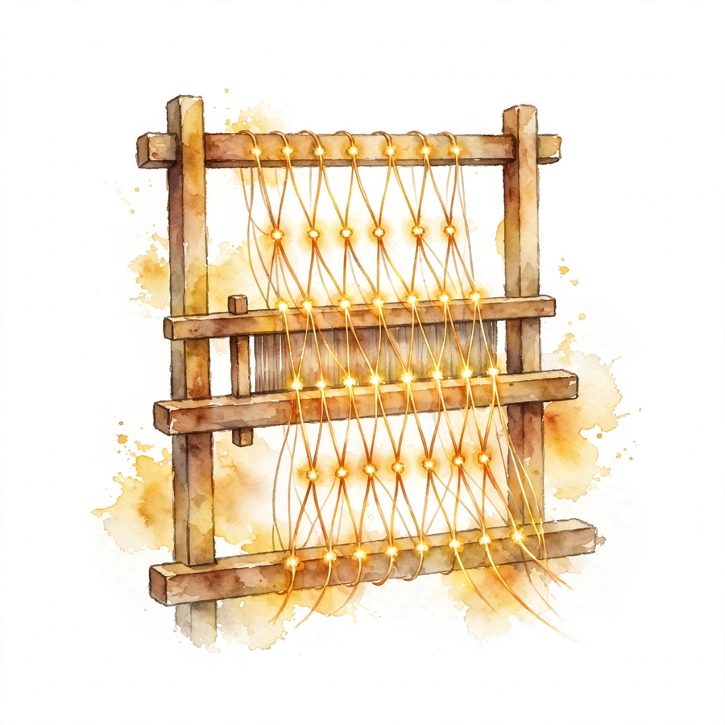

Companion · narrated from the lesson document
How do you train on raw text with no labels? This companion walks the full arc of Unit 14: tokenization, the autoregressive factorization and the next-token loss, the transformer interface, causal attention computed by hand, the KV cache and its costs, attention variants, mixture of experts, in-context learning and SFT, and the train/inference gap.
From the lesson The idea, and every number beside it, comes from the cited section of lesson-14-llm-architecture-training.md. The phrasing is the companion's.
Illustration Invented by the companion: an analogy, a toy with made-up values, or a what-if. Never lecture content.
companion Companion voice: the idea above the tag is from the lesson. The generalization below it is the companion's.
Provenance: the lesson notes that Lecture 14 and 15 transcripts cover LLMs and attention variants (SRC-02), but only their headers were inspected. Transcript content was not read in depth. No lecture video is named. The lesson's Source mapping states that SRC-01 chapter 17 (PDF pages 203 to 219) was read in full on 2026-10-06. Positional schemes, load-balancing losses, and the train/infer mismatch and resource-accounting framings are standard background beyond the notes, labeled as such. All lesson numbers below were independently recomputed for this page and matched. Leaf rows carry SOURCE ATTRIBUTION PENDING until the RUN 6 pass.

From the lessonSL-01 §Source anchor, §BPE intuition, §The compromise
A language model does not read raw strings. Text is broken into tokens: whole words, word pieces, punctuation, whitespace, bytes, or special markers such as end-of-text. A tokenizer maps a string to x = (x₁, ..., x_T) with x_t in the vocabulary V. Modern models use subword tokenization, usually byte-pair encoding (BPE) [Sennrich et al., 2016]. Start from tiny pieces (bytes or characters). Repeatedly add a new token for the adjacent pair that occurs most often in the corpus. After many merges, common strings ("ing", "tion", whole common words) become single tokens, rare words still split into pieces. The notes' examples: "glioblastoma" becomes glio+blast+oma, "LLMification" becomes LL+M+ification.
Character-level: tiny vocabulary, long sequences. Word-level: short sequences for common text, but rare words collapse to an unknown token. Subword sits between: the vocabulary |V| is on the order of 1e5 (the notes cite Qwen3.5 at 248,320 tokens) and the sequence length T stays manageable. The tokenizer is fixed before pretraining, and it shapes both |V| and T for everything after.
From the lessonSL-01 §Failure case
Training with one tokenizer and serving with another: token ids shift meaning and the model's learned embeddings misalign. Silent and catastrophic.
From the lessonSL-02 §Source anchor, §The training loss, §Mental model
A language model represents p(x₁, ..., x_T). The support has size |V|^T: astronomical. The chain rule factors it: p(x₁, ..., x_T) = p(x₁) p(x₂ | x₁) ... p(x_T | x₁, ..., x_{T-1}) (17.1). Each conditional has support |V|: one distribution over the vocabulary per position. Maximum likelihood, normalized by length: loss = −(1/T) log p_θ(x₁, ..., x_T) = (1/T) Σ_t l_ce(f_θ(x₀, ..., x_{t-1}), x_t) (17.12-17.13), the cross-entropy between the logits and the true next token, averaged over positions and then over sequences. The standard optimizer is AdamW [Loshchilov and Hutter, 2019] on mini-batches of sequences.
Every position is a classification problem with |V| classes, and the label is free: it is the next token. One long document yields T training examples. The model learns "which sentences are plausible" by learning to continue them.
From the lessonSL-02 §Correctness checks
The loss at position t may only use x₀, ..., x_{t-1}. Using x_t as input is label leakage (the mask of SL-04 enforces this structurally).
From the lessonSL-03 §Source anchor, §Blocks
Tokens become row-vector embeddings e_i in R^{1 × d}, stacked into E in R^{|V| × d} (17.2). A special beginning token x₀ is prepended. The transformer f_θ maps the embedding sequence to logit vectors (u₁, ..., u_{T+1}): p_θ(x_t | x₁, ..., x_{t-1}) = softmax(f_θ(x₀, ..., x_{t-1})) (17.3). Crucially, u_t depends only on x₀, ..., x_{t-1}: the autoregressive property, built into the architecture by the mask. A transformer stacks blocks of multi-head self-attention and position-wise MLPs (GELU or SwiGLU). Modern LLMs use PreNorm, usually with RMSNorm. The MLP acts per position with shared weights. Attention is the only cross-position mixing.
From the lessonSL-03 §Positional boundary, §Failure case
Self-attention is permutation-equivariant: without extra signal it cannot tell token order. The notes state positional embeddings are important in practice but defer them to a future revision. Boundary: the notes teach the mask fully, positional schemes are standard background, not note-sourced. Forgetting the causal mask in training: the model reads the answer from the future, training loss collapses to near zero, and the model is useless at generation. The mask test (perturb x_{t+1}, check u_t unchanged) catches it.
From the lessonSL-04 §Source anchor, §The scaling, §The causal mask
Queries ask "what am I looking for", keys advertise "what I have", values carry the payload: q_t = h^in_t W^Q, k_t = h^in_t W^K, v_t = h^in_t W^V (17.14-17.16). Scores: softmax over q_t k_jᵀ / c (17.17). Output: h^out_t = Σ_j p_{t,j} v_j (17.18). The scaling c = √d_h [Vaswani et al., 2017]: at initialization the dot product has variance d_h, so without scaling the logits grow with head dimension and the softmax saturates (tiny gradients). Dividing by √d_h keeps logit variance near 1. The notes flag this as a heuristic: real queries and keys are not independent.
For autoregression, position t must not see j > t. Add a mask M before the softmax: H^out = softmax_row(QKᵀ/c + M)V (17.21). Causal mask: M_{t,j} = 0 for j ≤ t, −infinity for j > t. The −infinity entries make softmax probabilities exactly zero (17.22-17.23). The mask also enables parallel training: all positions run in one forward pass while each keeps the left-to-right rule.
Illustration The mask switch. The lesson's Q and K rows are fixed. Toggle the causal mask on row 2 and watch the future leak in.
With the mask: [0.3302, 0.6698, 0]. Without: [0.1978, 0.4011, 0.4011]. The future token steals 0.40 of the attention.
From the lessonSL-04 §Failure case
Mask applied after softmax instead of before: the −infinity never enters the normalization and future positions leak. Check exact zeros, not just the row sums.
From the lessonSL-05 §Source anchor, §KV cache, §Memory and compute
Multi-head attention runs n_h single-head modules in parallel (n_h·d_h = d), concatenates the per-head outputs, and applies W^O (17.25). Generation is sequential: each new token feeds back as input. Keys and values of the prefix are recomputed at every step unless cached. The KV cache stores K_{1:t} and V_{1:t}: at step t the output is softmax(q_t K_{1:t}ᵀ/c)V_{1:t} (17.27). New rows append, old rows never recompute. Per head, training attention costs O(T²d_h) operations. Quadratic in T: the main difficulty past 10K tokens, up to 1M in extreme cases. FlashAttention [Dao et al., 2022] streams the score matrix for O(T) memory. Decoding stores the KV cache: O(Td_h) per head in GPU memory.
| d = 4096, n_h = 32, d_h = 128, fp16, per layer = 2·T·d·2 bytes | KV cache |
|---|---|
| T = 2048 | 32.0 MiB |
| T = 8192 | 128.0 MiB |
| T = 32768 | 512.0 MiB |
| 32 layers at T = 8192, one sequence | 4.0 GiB |
Illustration The cache accountant. Type context length T, model width d, KV heads n_g, and bytes per element. The toy reports per-layer and 32-layer cache for one sequence.
T: d: n_g: bytes:
From the lessonSL-06 §Source anchor
MQA [Shazeer, 2019]: many query heads share one key head and one value head. GQA [Ainslie et al., 2023]: query heads are partitioned into groups, each group sharing one key/value head. With n_h queries and n_g key/value heads, query head j uses group g(j) = floor((j−1)/τ) + 1 (17.32-17.34). Standard MHA is n_g = n_h. MQA is n_g = 1. A spectrum trading quality against decoding efficiency: fewer KV heads, smaller cache. Sliding-window attention: each token attends only to the last w tokens. Old keys leave the active cache. QK-Norm [Henry et al., 2020]: normalize queries and keys before the dot product, replacing it with a scaled cosine similarity. Controls logit scale and training stability, adopted in Qwen3 and OLMo2.
| Same dimensions, T = 8192, fp16, per layer | KV cache |
|---|---|
| MHA (n_g = 32) | 128.0 MiB |
| GQA (n_g = 8) | 32.0 MiB |
| MQA (n_g = 1) | 4.0 MiB |
From the lessonSL-06 §Failure case
Aggressive MQA on a quality-sensitive task: the shared key head bottlenecks distinct query behaviors and quality drops. The notes frame it as a spectrum, pick the point by measurement.
From the lessonSL-07 §Source anchor, §Mental model
MoE makes some layers sparse. Instead of one dense MLP per block, the layer holds m expert MLPs E₁, ..., E_m and a router. For token t with hidden state h_t, the router computes r_t = σ(h_t W^R) in R^m. A small set S_t of experts (often top-k) is chosen and their outputs combined with renormalized weights α_{t,s}. The notes' example: DeepSeek-V3 uses 256 routed experts per MoE layer, activates the top 8 per token, plus one shared expert applied to every token [DeepSeek-AI, 2024]. Each token consults a few specialists. Total parameters grow with m, per-token compute grows with k. The shared expert is the common feedforward path, routed experts specialize by token and context.
From the lessonSL-07 §Failure case
Router collapse: every token routes to the same few experts and the rest starve. Capacity is then wasted. Load-balancing losses exist to prevent this (standard background beyond the notes).
From the lessonSL-08 §Source anchor, §Mental model
In-context learning: concatenate labeled examples and the test input into one prompt and let the pretrained model generate the continuation. The notes' example teaches the symbol ~ as addition from two examples, then answers "15 ~ 2" with 17. Demonstrations teach the task, the label space, and the output format [Min et al., 2022]. Zero-shot prompting: no examples, just a natural-language task description ("Answer yes or no."). No training data, no gradient updates. SFT: update parameters on prompt-completion pairs (xⁱ, yⁱ), initialized at θ̂, minimizing the conditional next-token loss (17.36). Implementation: concatenate prompt and answer into one causal sequence zⁱ but apply the loss only at answer positions via a loss mask m_r (0 on prompt tokens, 1 on answer tokens) (17.37). The loss mask is separate from the attention mask: answer tokens still attend to the prompt, but prompt tokens do not contribute to the objective.
Prompting (ICL, zero-shot) changes the text, not the weights. SFT changes the weights, not the text format: it teaches the model the desired conditional distribution p(y | x). The loss mask is the key detail: the model learns to produce answers, not to predict prompts.
From the lessonSL-08 §Correctness checks, §Failure case
The loss mask must be 0 on prompt tokens. If prompt tokens contribute, the model wastes capacity predicting the question. Zero-shot performance must be reported with the exact prompt wording. Wording changes are a different experiment. SFT on a narrow answer style: the model learns the format but forgets the pretraining distribution (format overfitting). Mix SFT data with pretraining-style data to hold the base.
From the lessonSL-09 §Train/infer mismatch
Training feeds ground-truth prefixes (teacher forcing): every position predicts the next token given the true history. Inference feeds the model's own outputs: each generated token becomes the next input (17.4-17.7). Errors compound: a small mistake early shifts the whole continuation distribution, and the model never saw its own mistakes during training. This is exposure bias. Decoding choices live at inference only: temperature τ (17.8-17.11, τ → 0 is greedy), top-k (keep the k most likely tokens, renormalize), top-p / nucleus (smallest set with total probability at least p, renormalize). They change the sampling distribution, not the model or the training loss. Common setting from the notes: top-p 0.9 with temperature 0.7-1.0.
| Logits [2.0, 1.0, 0.5, 0.1] | Softmax |
|---|---|
| τ = 0.5 | [0.8282, 0.1121, 0.0412, 0.0185] (sharper) |
| τ = 1.0 | [0.5745, 0.2114, 0.1282, 0.0859] |
| τ = 2.0 | [0.4056, 0.2460, 0.1916, 0.1569] (flatter) |
| Top-p 0.9 at τ = 1 | keeps 3 tokens (cum. 0.9141) → [0.6285, 0.2312, 0.1402] |
Illustration The decoding bench. Type a temperature. The toy applies it to the lesson's logits and reports the distribution plus the top-p 0.9 kept set.
τ:
The lesson's check: temperature and top-p are inference settings. They must not appear in any training-loss computation.
From the lessonSL-09 §Resource accounting
The ledger for a deployment: model weights (params × bytes), KV cache per concurrent sequence (grows with T and batch), and compute per token (grows with T² in prefill, T per step in decode). GQA/MQA and sliding windows cut the cache term. FlashAttention cuts the training memory term. None cut the quadratic compute term.
From the lessonSL-01 to SL-09
The arc, end to end. Text becomes tokens by BPE, a compromise between tiny vocabularies and long sequences (SL-01). The chain rule factors p(x₁, ..., x_T) into per-position classification problems, and the label is free: the next token (SL-02). The transformer maps embeddings to logits with the autoregressive property built in by the mask (SL-03). Attention divides by √d_h, masks the future, and the lesson's hand computation shows exactly how (SL-04). The KV cache stores keys and values so new rows append and old rows never recompute: 128 MiB per layer at T = 8192 for the 4096-wide model, 4 GiB over 32 layers (SL-05). MQA, GQA, sliding windows, and QK-Norm trade quality against memory: the cache scales with n_g, not n_h (SL-06). MoE grows parameters with m while per-token compute grows with k (SL-07). Prompting changes the text, SFT changes the weights with a loss mask separate from the attention mask (SL-08). Training sees ground-truth prefixes while inference feeds its own outputs: temperature and top-p live at inference only, and the resource ledger counts weights, cache, and quadratic compute (SL-09).
From the lesson§Research reading, §Role bridges
Where the unit points next, in the lesson's own forward links. Read SRC-01 chapter 17 in full, Vaswani et al. [2017] sections 1-3, Dao et al. [2022] sections 1-2. The extension: implement a tiny character-level transformer and verify the mask test (u_t invariant to future perturbation). The falsifiable claim: removing the mask drops the loss to near zero on training data while generation coherence collapses. For the ML engineer: the causal mask and the KV cache are the two things that must be right in every serving stack. Test both. For the research engineer: attention variants are quality-vs-memory trades, measure, do not assume. For the LLM engineer: SFT's loss mask is the detail that separates answer training from prompt prediction. Check it first in any finetune pipeline.
Every lesson on this page, in order. Tap one to return to its chapter.